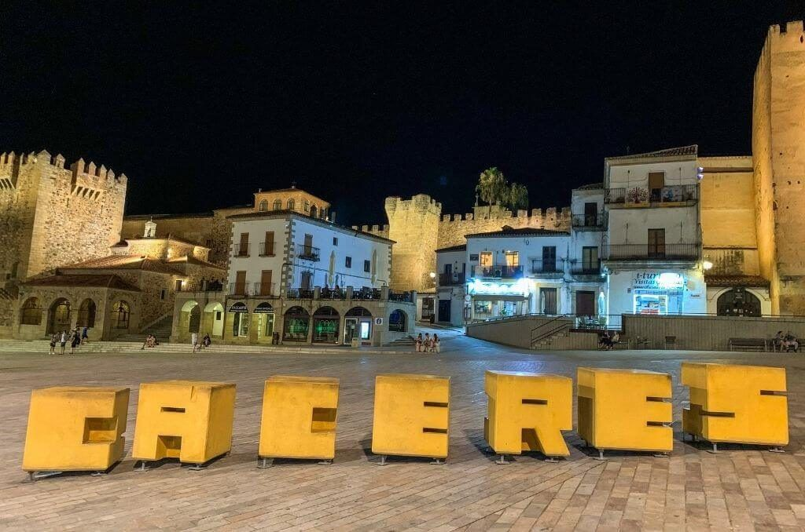
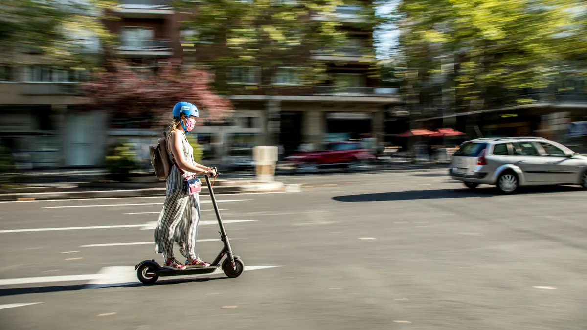

Un desafio en movimiento
Cáceres, con su impresionante casco histórico y sus calles estrechas, es una joya cultural que atrae a miles de turistas cada año. Sin embargo, estas mismas características hacen que la movilidad en la ciudad sea todo un reto. Los habitantes enfrentan problemas diarios como:
- Congestión de tráfico: Especialmente en horas punta, los accesos a la ciudad y los recorridos por el centro se vuelven lentos y frustrantes.
- Falta de alternativas sostenibles: Aunque el transporte público es útil, no siempre cubre todas las necesidades de los ciudadanos, especialmente en zonas menos céntricas.
- Impacto medioambiental: Cáceres no es ajena a los problemas globales de contaminación y emisiones de carbono que afectan la calidad del aire y el bienestar de sus habitantes.
- Dificultades para aparcar: Con espacios limitados y un flujo constante de vehículos, encontrar aparcamiento en muchas áreas de la ciudad puede ser un verdadero desafío.

La revolución de la movilidad está aquí
En Frenzado creemos que Cáceres merece una solución de transporte que sea tan única como su patrimonio histórico. Nuestro servicio de patinetes eléctricos ha sido diseñado pensando en las necesidades de todos los cacereños, ofreciendo una alternativa moderna, sostenible y accesible. Con nuestros patinetes eléctricos, logramos:
- Reducción del tráfico: Gracias a un sistema de transporte ágil, los ciudadanos pueden desplazarse sin necesidad de recurrir al coche, liberando las calles de congestión.
- Sostenibilidad ambiental: Cada trayecto en patinete eléctrico contribuye a la disminución de emisiones contaminantes, ayudando a proteger el aire limpio y el entorno natural que Cáceres tanto aprecia.
- Mayor accesibilidad: Ya sea para ir al trabajo, al centro histórico o simplemente pasear por la ciudad, nuestros patinetes están disponibles en ubicaciones clave, listos para ser usados en cualquier momento.
-
Flexibilidad para turistas: Frenzado no solo mejora la vida de los residentes, sino que también ofrece a los visitantes una forma divertida y eficiente de explorar la ciudad, respetando su patrimonio.
Además, hemos diseñado un sistema intuitivo que permite:
- Registro rápido y sencillo: Accede a nuestros patinetes desde una aplicación móvil con solo unos pasos.
- Precios asequibles: Creemos en la movilidad accesible para todos, con tarifas competitivas y opciones por minuto, hora o día.
- Carga y mantenimiento sostenible: Utilizamos estaciones de carga estratégicas y garantizamos que cada patinete reciba mantenimiento regular, maximizando su vida útil y minimizando el impacto ambiental.
En Frenzado, nuestra misión es simple: ofrecer a Cáceres una forma de transporte que sea eficiente, respetuosa con el medio ambiente y adecuada para el estilo de vida moderno, todo mientras preservamos la belleza y tranquilidad de esta ciudad única. Juntos, podemos transformar cómo nos movemos por Cáceres.